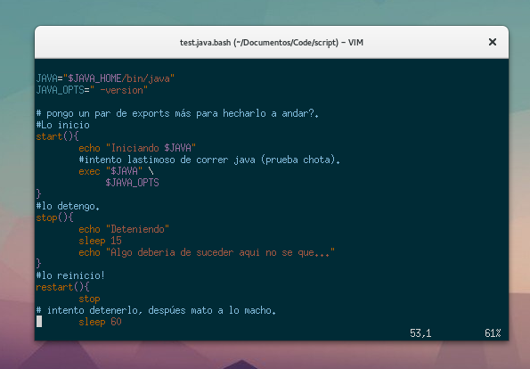

Tech Creator · DevOps · Data & Automation
Administrador de Sistemas · DevOps mindset
Perfil orientado a automatización operativa, calidad de datos, trazabilidad y mejora continua en plataformas críticas.
LinkedInDesarrollo de scripts en Bash, Python y SQL para optimizar tareas, generar reportes y automatizar procesos complejos.
Limpieza, validación y visualización de datos con herramientas como Excel, Jupyter y PostgreSQL para mejorar la toma de decisiones.
Monitoreo, trazabilidad de cambios y operación confiable con enfoque en estabilidad, diagnóstico y mejora continua.
Repos públicos cargados desde GitHub.
Últimos commits públicos para mostrar progreso técnico real en repositorios activos.
Perfil orientado a automatización operativa, calidad de datos, trazabilidad y mejora continua en plataformas críticas.
LinkedInsept 2025
EDA, estructuración y limpieza de datos, análisis en Python y visualización en Tableau.
ago 2025
Fundamentos de Python, estructuras de datos, control de flujo y resolución de tareas orientadas a datos.
2025
Conceptos base para proyectos de machine learning y evaluación de modelos.
2025
Flujos de análisis de datos de punta a punta, desde ETL hasta reporting y visualización.
2025
Levantamiento, análisis y documentación de requisitos aplicados a proyectos reales.
Optimización de procesos mediante scripting, Docker y control de versiones.
Limpieza, validación y visualización de información con Python, SQL y Jupyter.
Creación de documentación funcional clara y diseño visual para proyectos tecnológicos.
Cursos, certificaciones y desarrollo personal en tecnología, automatización y análisis de datos.
Administrador de Sistemas · DevOps mindset · QA estructurado
Ejemplo real · Validación de contratos en PostgreSQL
WITH integrity_check AS (
SELECT
c.id,
c.employee_id,
c.date_start,
c.date_end,
CASE
WHEN c.date_end < c.date_start THEN 'INVALID_RANGE'
WHEN c.state NOT IN ('open','pending') THEN 'INACTIVE'
ELSE 'OK'
END AS contract_status
FROM hr_contract c
)
SELECT contract_status, COUNT(*)
FROM integrity_check
GROUP BY contract_status
ORDER BY contract_status;
Sí. Uso scripting como herramienta diaria para resolver tareas operativas, reducir errores manuales y dejar procesos repetibles. En GitHub publico utilidades reales de automatización, ajuste de sistemas y experimentación técnica que después aplico en entornos de trabajo.
Priorizo lo que impacta en calidad y tiempos: validaciones funcionales, controles de datos, tareas de soporte, despliegues repetitivos y monitoreo operativo. El objetivo es simple: menos fricción, más trazabilidad y decisiones técnicas mejor fundamentadas.
Sí. Está versionado en Git, se alimenta con datos generados por scripts y usa workflows para mantener contenido y publicaciones actualizado. Es un ejemplo de la misma lógica que aplico en proyectos: estructura, automatización y mantenimiento sostenible.
Sí. Parte central de mi rol es traducir necesidades del negocio a soluciones implementables, coordinar prioridades y sostener gobernanza técnica. Combino análisis funcional, operación y liderazgo para que los cambios lleguen a producción con control y continuidad.
Representa una forma de trabajo: criterio técnico, mejora continua y foco en soluciones que se puedan mantener. Es la síntesis entre ingeniería práctica, identidad visual propia y una manera ordenada de construir, documentar y automatizar.